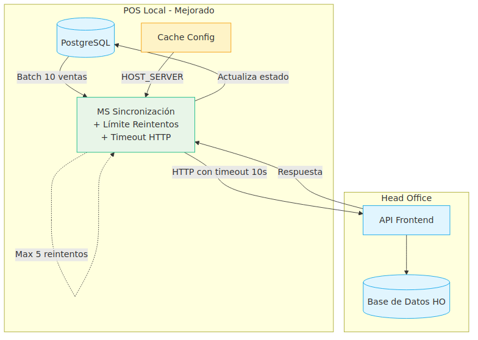
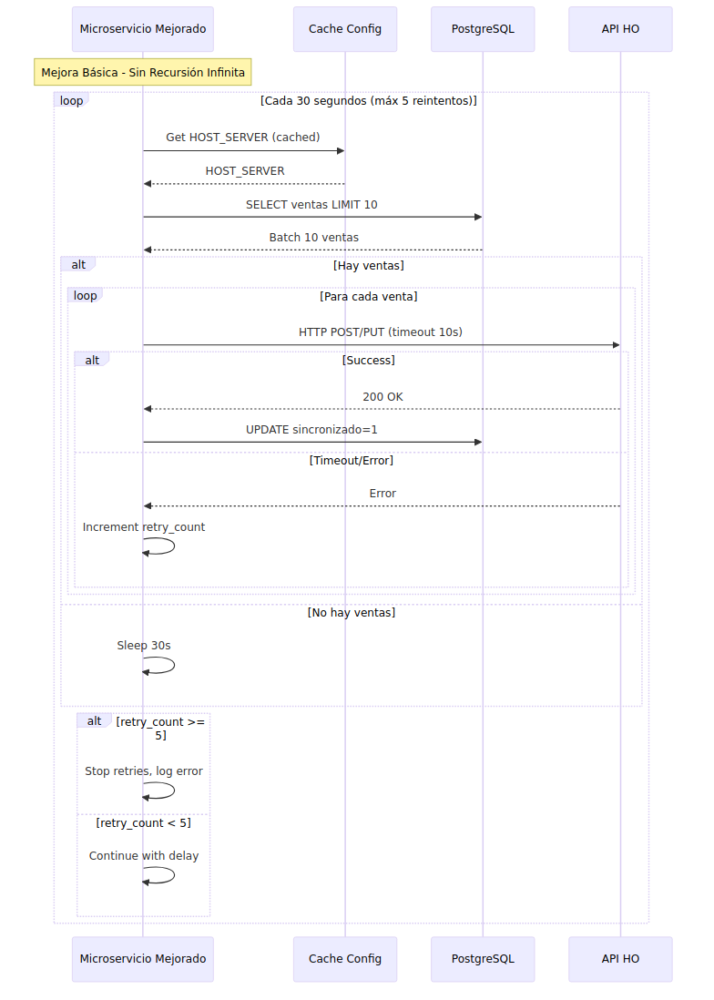
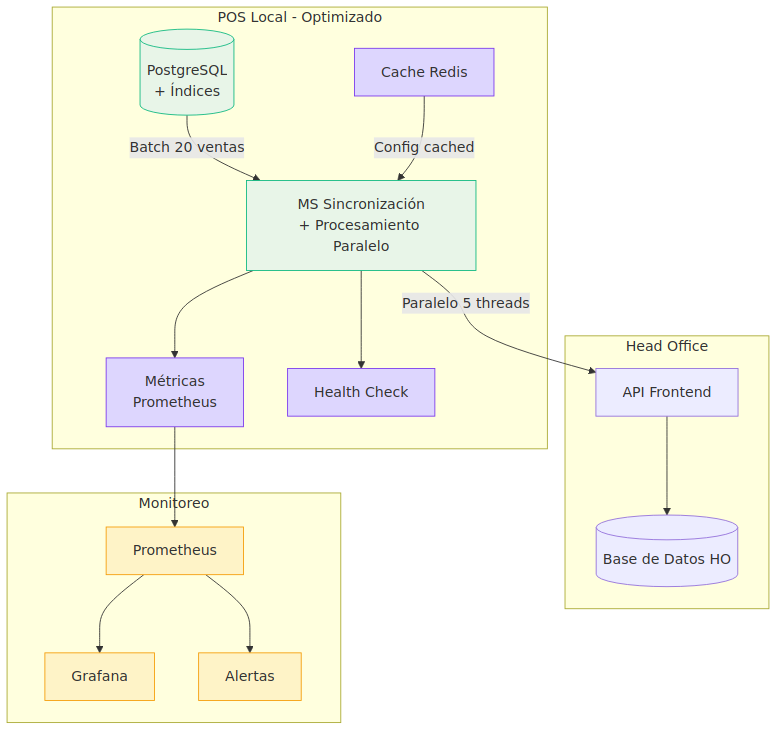
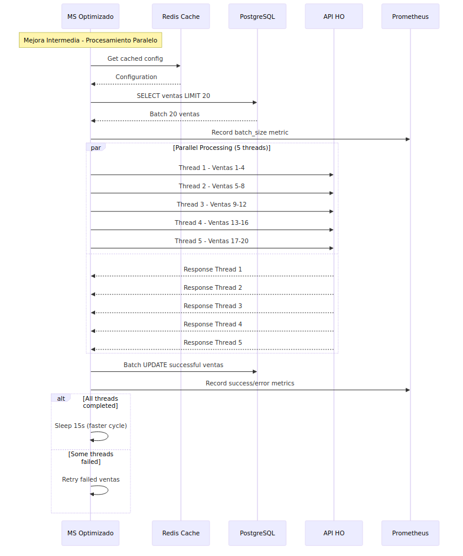
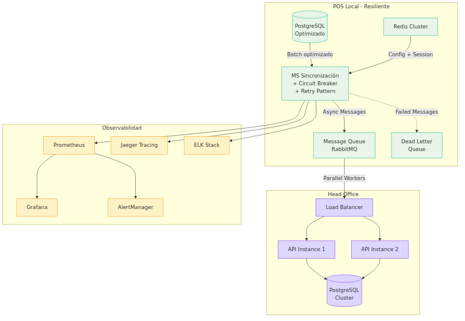
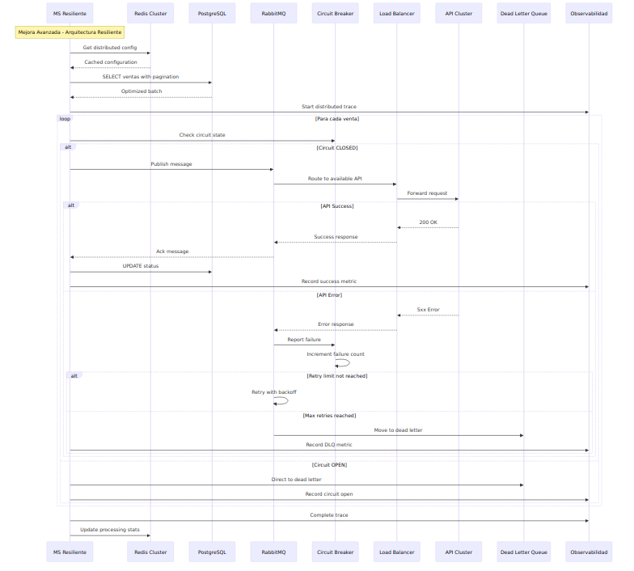

Enfoque: Estabilizar el sistema actual sin cambios arquitectónicos mayores.


| Métrica | Actual | Esperado | Mejora |
|---|---|---|---|
| Disponibilidad | 99.2% | 99.5% | +0.3% |
| Throughput | 52/h | 100/h | +92% |
| Error Rate | 5.2% | 2% | -62% |
| Riesgo Stack Overflow | Alto | Eliminado | ✅ |
Enfoque: Mejoras significativas de rendimiento con observabilidad completa.


| Métrica | Actual | Esperado | Mejora |
|---|---|---|---|
| Disponibilidad | 99.2% | 99.7% | +0.5% |
| Throughput | 52/h | 200/h | +285% |
| Tiempo Respuesta | 2.3s | 1.5s | -35% |
| Error Rate | 5.2% | 1% | -81% |
| Escalabilidad | 500 est. | 1000 est. | +100% |
Enfoque: Arquitectura de microservicios resiliente con patrones avanzados.


| Métrica | Actual | Esperado | Mejora |
|---|---|---|---|
| Disponibilidad | 99.2% | 99.9% | +0.7% |
| Throughput | 52/h | 500/h | +862% |
| Tiempo Respuesta | 2.3s | 0.8s | -65% |
| Error Rate | 5.2% | 0.1% | -98% |
| Escalabilidad | 500 est. | 5000+ est. | +900% |
| MTTR | 30 min | 2 min | -93% |
| Aspecto | Propuesta Básica | Propuesta Intermedia | Propuesta Avanzada |
|---|---|---|---|
| Duración | 2-3 semanas | 4-6 semanas | 8-10 semanas |
| Recursos | 1 desarrollador | 2 desarrolladores | 3 desarrolladores |
| Complejidad | 🟢 Baja | 🟡 Media | 🔴 Alta |
| Riesgo | 🟢 Bajo | 🟡 Medio | 🔴 Alto |
| Throughput | 100/h (+92%) | 200/h (+285%) | 500/h (+862%) |
| Escalabilidad | Hasta 800 estaciones | Hasta 1000 estaciones | 5000+ estaciones |
| ROI | 150% en 3 meses | 300% en 6 meses | 500% en 12 meses |
Enfoque Incremental:
Propuestas de Mejora: 08 de septiembre de 2024 | Responsable: JONATHAN OSORIO | Terpel S.A.